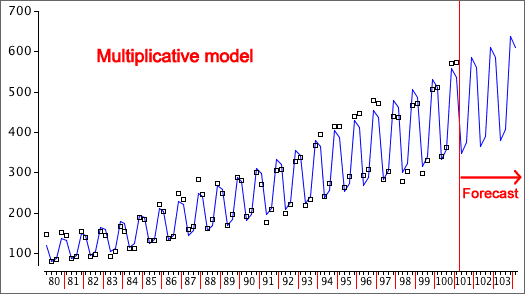

Obtaining forecasts
A multiplicative model is equivalent to an additive model for the log data.
log(Data) = Seasonal* + Trend* + Cyclical* + Residual*
This model will give forecasts of the log data.
forecast of log(Data) = (forecast Seasonal*) + (forecast Trend*) + (forecast Cyclical*)
To obtain forecasts in the original scale, an inverse transformation must be applied. With base-10 logarithms,
| forecast of Data = 10 | forecast of log(Data) |
(If natural logarithms were used, an exponential function gives a forecast in the original units. Both types of logarithms result in identical forecasts.)
